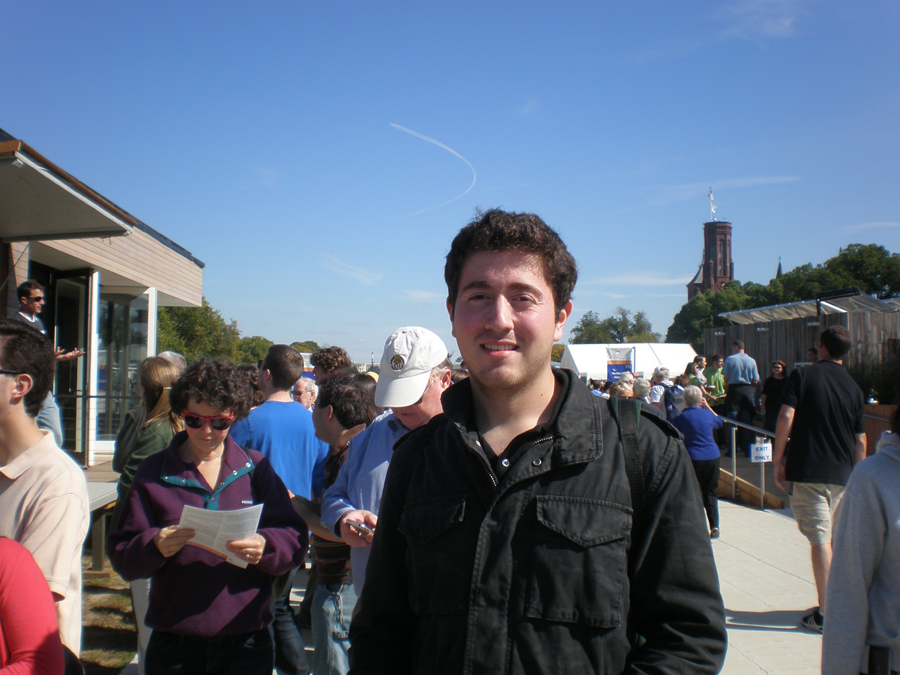

| About me | Resume | Music | Solar | Purdue |
From 2008 to 2010, I participated in the 2010 Solar Decathlon Competition along with a team of students composed of fellow architects and students from other majors. I had the opportunity to visit previous entries at U.T. & Texas A&M as well to be an expectator in the 2009 Solar Decathlon Competition held in Washington DC. We developed the project inside the Academic program of Innovation at ITESM..
When you are in college, the most memorable moments are not the moments spent at class but the extra-curricular projects that give students a chance to relate to others.
It was project on which we developed a prototype of a home fed by solar energy.
For 2 years I had the opportunity to work and share with the best people. It all began in 2008 with the idea of my friend Lily of participating on the contest. I accepted the invitation and among several friends send our submittal, which was accepted.
We started the project by asking for help from the school faculty and got a green light to develop the project as part of our school activities by sharing special for the development of the innovative house.
We had the opportunity to work in multi-disciplinary team of Civil Engineers, Architects, Mechanical engineers and Physics to develop the project and received a lot of help from all the faculty of our school.
